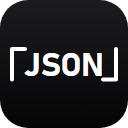

根因一（白边）：出图走 CDP Page.captureScreenshot，该接口默认把页面合成到
不透明白底上，产出的 PNG 是 colorType=2（RGB，无 alpha 通道），圆角方块之外
于是被填成纯白 #FFFFFF。深色工具栏上就是一圈白边。
修法：抓图前用 Emulation.setDefaultBackgroundColorOverride 把浏览器默认底色设为
全透明（与 Puppeteer 的 omitBackground 同源），四角恢复 alpha=0，PNG 变为 colorType=6。
根因二（16px 错位）：紧跟 navigate 就截图，偶尔拿到布局未稳的中间态帧 ——
黑色方块被下推约 3px、底部被裁。修法是出图前 settle()（清滚动 + 等 3 帧 + 逼同步布局），
出图后 自检四角透明 + alpha 上下左右对称，不过就重截，仍不过则报错退出。
下面全部是真实尺寸，没有缩放。
